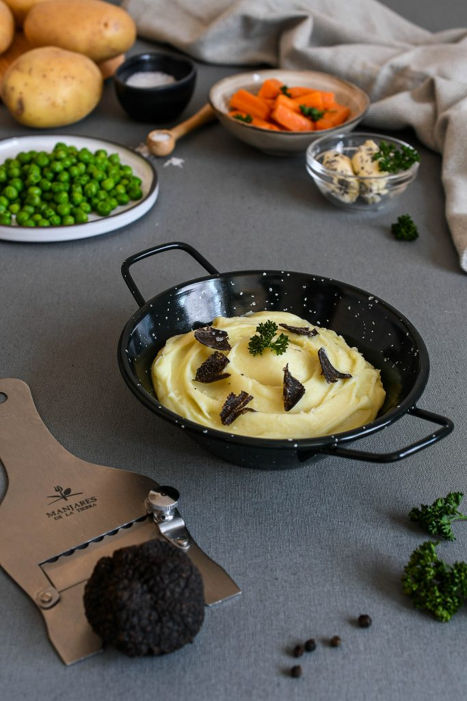

Puré de Patatas Trufado
Es una de las elaboraciones más clásicas de la gastronomía mundial. El puré de patatas es el mejor acompañante de diferentes platos, tanto de carnes como de pescados.
Si leemos diferentes recetarios, podemos encontrarnos muchos tipos de puré de patatas. En Alemania, es popular el Anermauke, un puré de patatas con cebolla. Si viajamos hasta Latinoamérica, los argentinos suelen acompañar las milanesas, filetes empanados, con un puré mixto de papa (así llaman ellos a las patatas), calabaza y boniato. A los chilenos les gusta algo picante, así que le añaden un toque de ají ahumado.
En Perú y Costa Rica lo suelen preparar con patata amarilla. Si volvemos a Europa, el puré no puede faltar en los shepherd's pie ingleses, que consisten en una base de carne, puré y luego se termina gratinándolo al horno.
Hoy preparamos un exquisito puré con un chorreón de aceite de trufa negra y trufa negra Tuber melanosporum. Ideal para cualquier guarnición.

Ingredientes
- 1 kilo de patata
- Sal gorda
- 30 g de aceite con trufa negra
- 120 g de mantequilla de trufa, en dados
- 180-200 ml de leche entera, caliente
- Sal
- 1 trufa Tuber melanosporum
Elaboración
-
Introducir las patatas, enteras y sin pelar, en una olla amplia. Cubrir con agua y agregar un buen puñado de sal gorda (10 g por cada litro de agua).
-
Llevar a ebullición, bajar el fuego ligeramente y cocer hasta que, al introducir un palillo o una brocheta, el centro de las patatas se note tierno.
-
Retirar del agua y dejar atemperar antes de pelar y pasar por un pasapurés.
-
Añadir el aceite y la mantequilla de trufa y remover enérgicamente con una cuchara de madera hasta conseguir una textura cremosa.
-
A continuación, incorporar la leche caliente, poco a poco hasta conseguir el espesor deseado. Remover durante el proceso.
-
Comprobar el punto y sazonar al gusto.
-
Servir con láminas de trufa fresca por la superficie.
Aqui les dejo un video con el procedimiento
¡Disfruten la receta!